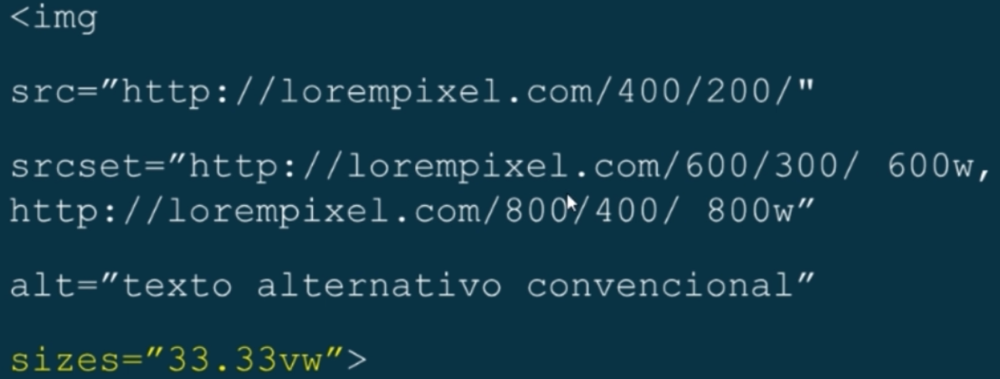
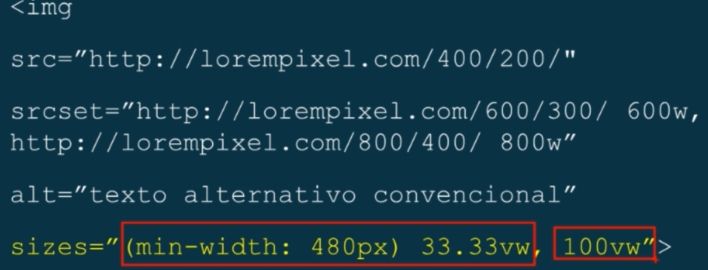
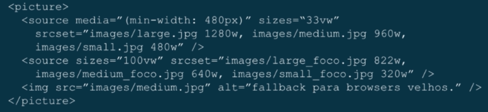

É necessário o uso da tag src normalmente, pois é possível que alguns browsers não possuam o suporte ao srcset
400w e 800w: servem para dizer ao browser qual o tamanho da width da imagem a ser renderizada.
Mas como informar ao browser o tamanho do container da imagem?

sizes="33.33vw" quer dizer que a imagem será renderizada a 33.33% da viewport
E se tivermos mediaqueries aplicadas no código?

Se a largura for maior que 480px a imagem será renderizada a 33.33vw, se não, 100vw.
E se quisermos imagens diferentes dependendo do contexto?

a tag <picture> funciona como um container para vários arquivos de imagens, tem que ser utilizada a tag <source> para a busca das mesmas.